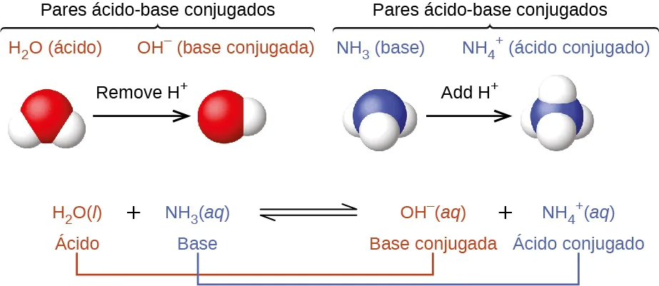
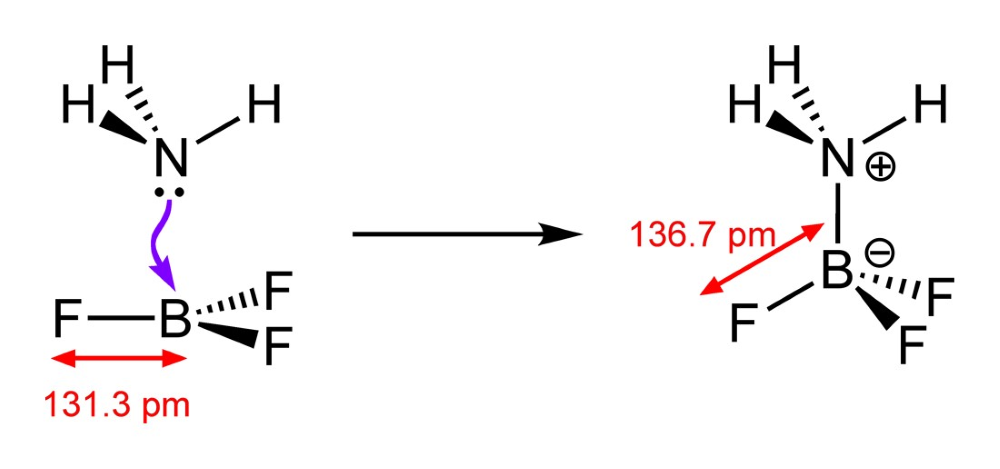
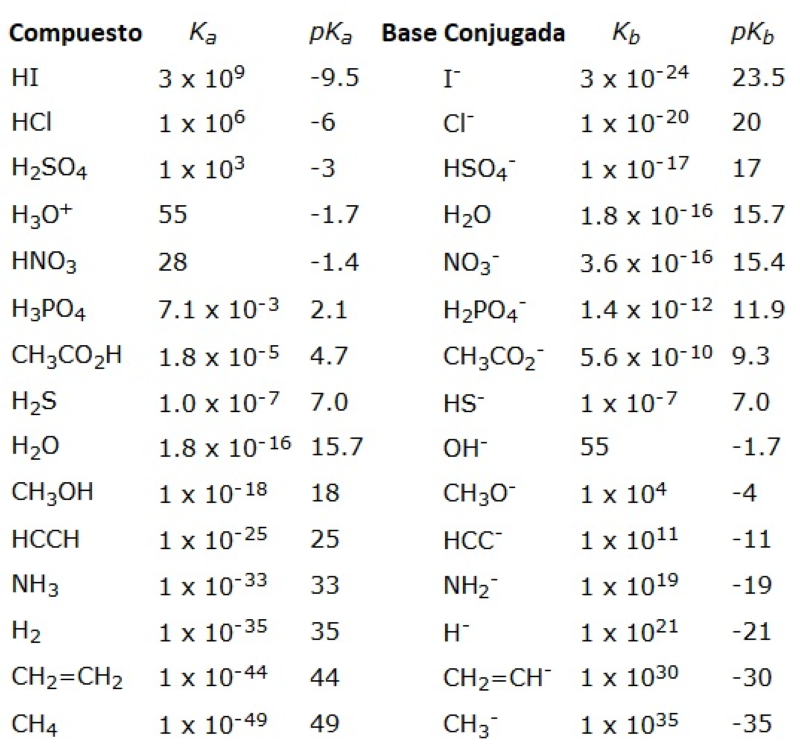
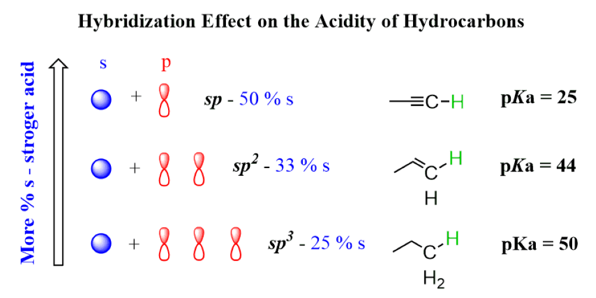
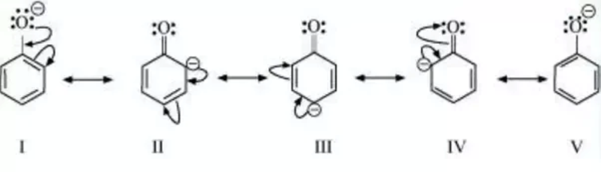
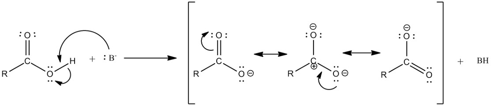
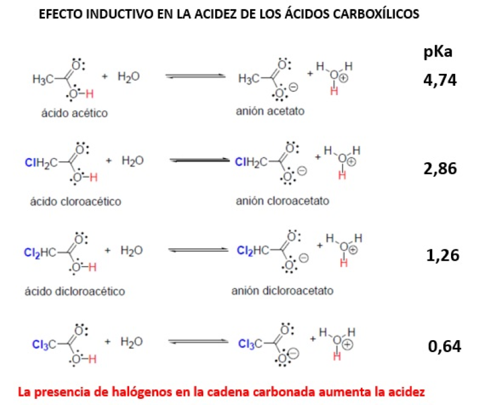
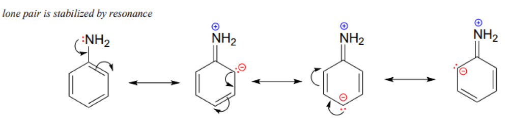

Universidad Peruana Cayetano Heredia
Facultad de Medicina • Química Orgánica
Capítulo 5: Acidez y Basicidad
Facultad de Medicina • Química Orgánica
Capítulo 5: Acidez y Basicidad

Cuando el ácido HA pierde H⁺ se convierte en su base conjugada (A⁻); cuando la base B captura H⁺ se convierte en su ácido conjugado (HB⁺).
Ácido: CH₃COOH (cede H⁺). Base: H₂O (acepta H⁺). Base conjugada: CH₃COO⁻. Ácido conjugado: H₃O⁺.

BF₃ + :NH₃ → F₃B–NH₃: el boro (octeto incompleto) acepta el par libre del nitrógeno.
Porque en la definición de Lewis el ácido no cede protones: acepta un par de electrones. El B de BF₃ tiene solo 6 electrones en su capa de valencia y puede completar el octeto aceptando el par libre de una base como NH₃.

Cuanto más bajo el pKa, más fuerte el ácido; cuanto más elevado el pKa, más fuerte su base conjugada.
| Ácido | pKa aprox. | Base conjugada | Fortaleza de la base conj. |
|---|---|---|---|
| HCl | ≈ −7 | Cl⁻ | Despreciable (muy débil) |
| CH₃COOH | 4.76 | CH₃COO⁻ | Débil |
| Fenol | ≈ 10 | Fenolato | Moderada |
| H₂O | 15.7 | HO⁻ | Fuerte |
| Etanol | ≈ 16 | Etóxido | Muy fuerte |
| Etino (alquino terminal) | ≈ 25 | Acetiluro | Fortísima |
| NH₃ | ≈ 38 | NH₂⁻ | Extrema |
| CH₄ | ≈ 50 | CH₃⁻ | La más fuerte de la serie |

Los orbitales s son menos energéticos y más internos: a mayor % de carácter s, mayor acidez: sp (50 %) > sp² (33 %) > sp³ (25 %).
Etano (pKa ≈ 50) < eteno (≈ 44) < etino (≈ 25): la acidez aumenta al aumentar el porcentaje de orbital s de la hibridación del carbono que soporta la carga.

La mayor acidez del fenol se debe a la estabilización por resonancia del ion fenolato, mayor que la del propio fenol (en el fenol la resonancia genera cargas separadas).
| Fenol | pKa | Efecto |
|---|---|---|
| Fenol | 10.0 | Referencia |
| p‑cresol (CH₃) | 10.3 | Activante débil: ↓ acidez (o/p) |
| o‑clorofenol | 8.5 | Halógeno −I: orto > meta > para |
| p‑nitrofenol | 7.1 | Desactivante fuerte: ↑↑ acidez (o/p) |
| 2,4‑dinitrofenol | 4.0 | Efecto aditivo de los NO₂ |
| Ácido pícrico (2,4,6‑trinitrofenol) | 0.4 | Relativamente fuerte |

El ion carboxilato posee estructuras resonantes equivalentes: estabilización superior a la del ácido → mayor acidez que alcoholes y fenoles.

Los sustituyentes desactivantes (‑I) estabilizan el carboxilato y aumentan la acidez; el efecto inductivo alcanza solo 3–4 enlaces. Los activantes (+I) la disminuyen: al crecer la cadena, ↓ acidez.

En la anilina el par libre del N se deslocaliza en el anillo: menor basicidad (pKb ≈ 9–13). Al protonarse (catión arilamonio) disminuye la conjugación → el catión es menos estable.
Porque el par libre del nitrógeno de la anilina está deslocalizado por resonancia en el anillo aromático (menos disponible para captar H⁺), y al protonarse se pierde parte de esa conjugación, desestabilizando el catión arilamonio.
Haz clic en cada nodo para desplegar u ocultar sus ramas.
Haz clic en la tarjeta para voltearla y ver la respuesta. Luego califícate con honestidad.
A pH muy por debajo de su pKa, el ácido débil está mayoritariamente protonado (no ionizado), forma neutra más liposoluble que atraviesa la membrana gástrica. En plasma (pH 7.4) estará ionizado (soluble en sangre). Es la base de la relación pH‑pKa‑absorción.
El sistema H₂CO₃/HCO₃⁻ (pKa ≈ 6.1): la base conjugada (bicarbonato) captura los H⁺ de los ácidos fuertes añadidos. Cuando el ácido es fuerte, su base conjugada es débil… y viceversa: el par amortiguador aprovecha exactamente la relación Ka·Kb del capítulo.
Su acidez superior a la de los alcoholes (resonancia del fenolato) le permite desnaturalizar proteínas y dañar tejidos; en medio alcalino forma fenolatos solubles. La acidez explica tanto su acción como su toxicidad cutánea.
Las aminas son bases: en medio ácido se protonan formando el ion amonio, soluble en agua. La sal (clorhidrato) garantiza la solubilidad exigida por inyectables y mejora la estabilidad del preparado.
Al ser un ácido carboxílico débil, con NaOH forma el carboxilato (sal sódica), ionizado y muy soluble en agua → absorción más rápida. Los ácidos sí forman sales con NaOH (a diferencia de los alcoholes).
Con orina alcalina, el ácido débil queda ionizado (salicilato): la forma cargada no se reabsorbe en el túbulo y se excreta (“atrapamiento iónico”). Se aplica la regla: ácido débil → base conjugada estable y soluble en agua.
Porque posee un ácido carboxílico (pKa ≈ 2), que a pH 7.4 está desprotonado (–COO⁻), y una amina (pKa ≈ 9–10), protonada (–NH₃⁺). El pH del medio frente a cada pKa decide el estado de ionización de cada grupo.
Ácido acetoacético y β‑hidroxibutírico, ácidos carboxílicos (pKa 3–5): a pH fisiológico están casi totalmente disociados, ceden H⁺ y consumen bicarbonato del buffer → cae el pH sanguíneo.
El ácido fosfórico del esqueleto es un ácido fuerte (pKa muy bajos): a pH ≈ 7.4 está totalmente disociado (fosfato −), lo que confiere al ADN su carácter polianiónico y su solubilidad en el medio acuoso celular.
Cuanto menor pKa, más fuerte el ácido; cuanto mayor pKa, más fuerte su base conjugada.
Carboxílicos (3–5) > fenoles (≈10) > alcoholes (15–18). Y el alquino terminal entra con 25 por hibridación sp.
Ka·Kb = Kw: las fuerzas se compensan. HCl fuerte → Cl⁻ base despreciable; etanol débil → etóxido fortísimo.
Más carácter s (sp 50 % > sp² 33 % > sp³ 25 %) → electrones más atraídos por el núcleo → anión estable → más ácido. Solo el alquino terminal tiene ese H.
En el mismo grupo, acidez hacia abajo: H₂S > H₂O y HI > HBr > HCl > HF. El tamaño pesa más que la electronegatividad.
Desactivantes/‑I (NO₂, halógenos, CF₃) aumentan la acidez; activantes/+I (CH₃, cadenas largas) la disminuyen. El efecto inductivo llega solo a 3–4 enlaces.
NO₂ ↑↑ acidez (efecto aditivo: pícrico 0.4); CH₃ ↓ (o/p). Halógenos por −I: orto > meta > para.
Alcoholes: CH₃OH > 1° > 2° > 3°; la basicidad de sus alcóxidos va al revés. Con NaOH no hay alcóxido: se necesita Na metálico.
En ácidos aromáticos, cualquier sustituyente en orto aumenta bastante la acidez (quelato/puente de H que estabiliza el carboxilato).
Ácido de Lewis = acepta par de electrones; base = lo aporta. BF₃ + :NH₃ → F₃B–NH₃.
Haz clic en cada término para ver su definición:
Error: invertir la relación pKa‑fuerza.
Error: tratar al alcohol como ácido “normal”.
Error: ignorar la resonancia del fenolato.
Error: olvidar que el H acídico exige triple enlace terminal.
Error: decir que HF es más fuerte que HI por el F.
Error: aplicar solo Brönsted‑Lowry.
Error: considerar solo el efecto inductivo.
Error: invertir el efecto del sustituyente.
Error: predecir acidez del isómero orto solo por electrónica.
Error: aplicar −I a cualquier distancia.
Cada ciclo muestra 10 preguntas al azar de una base de 30. Cada vez que entras a esta pestaña o terminas un ciclo se sortean preguntas nuevas.